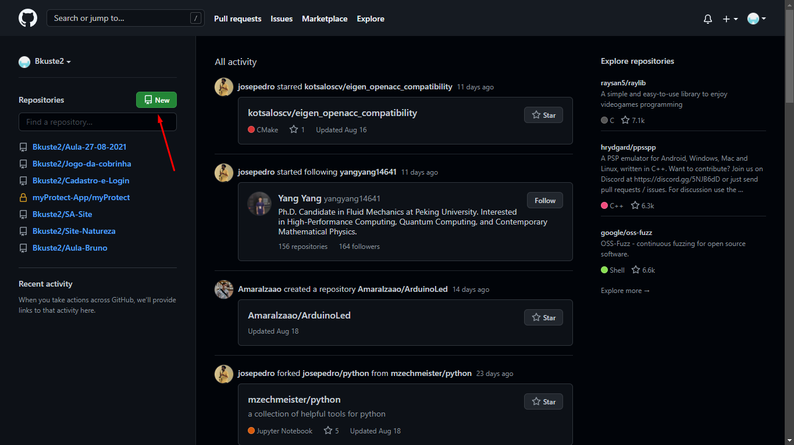
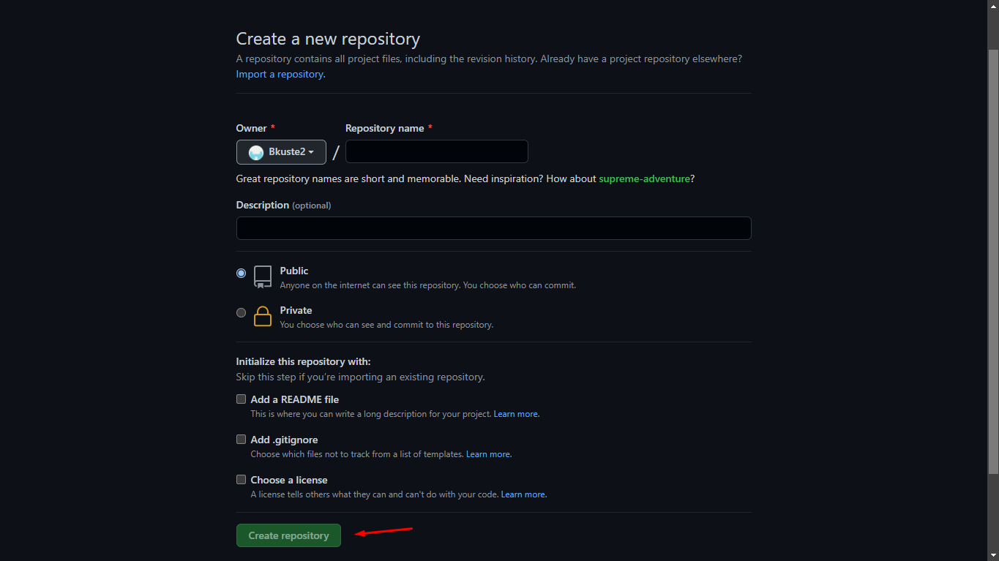
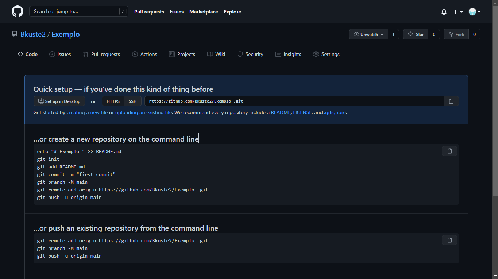
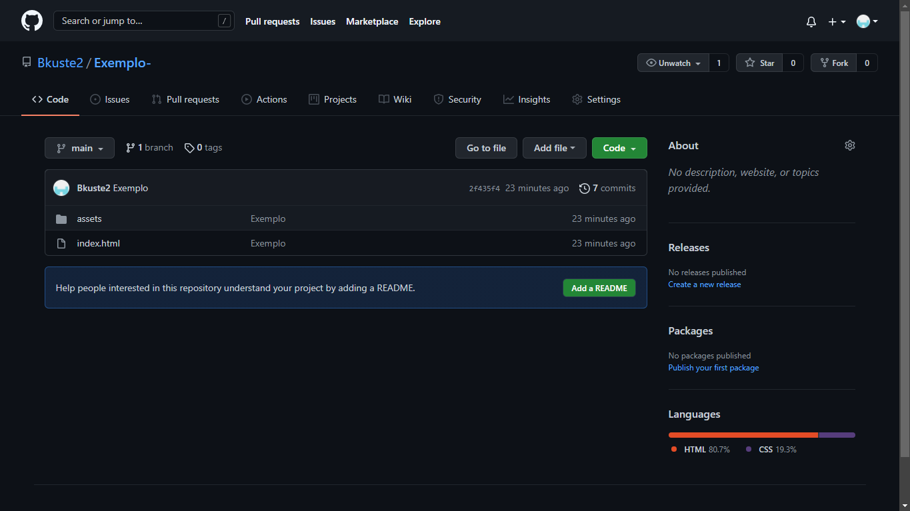
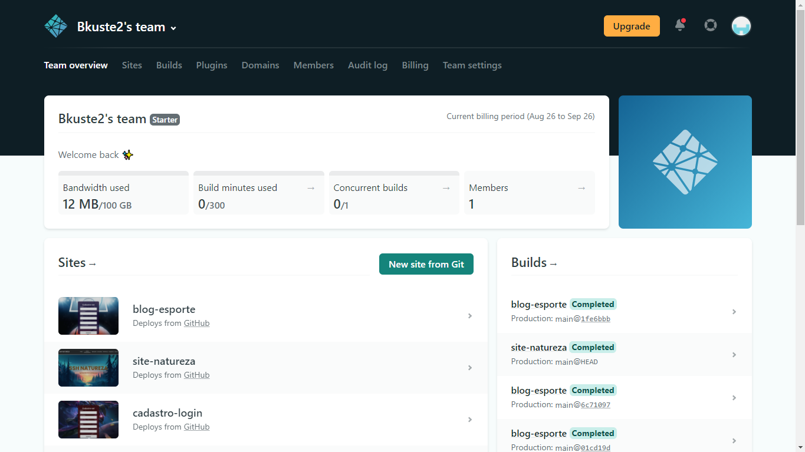
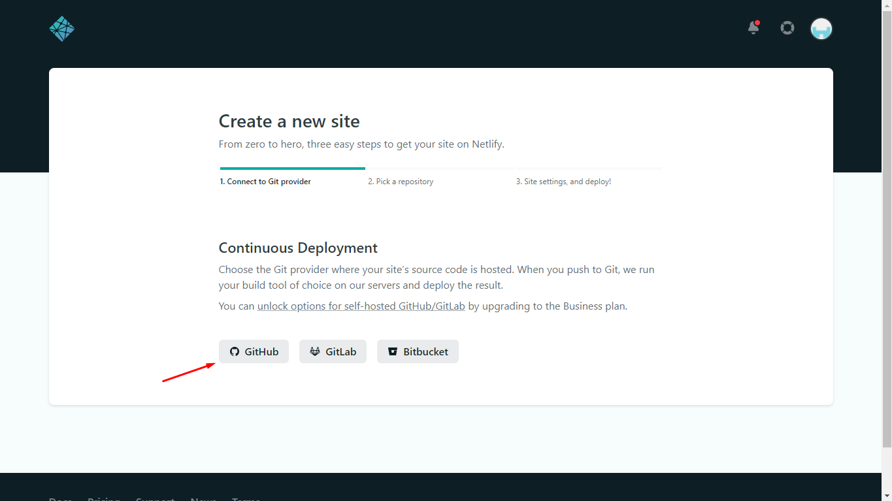
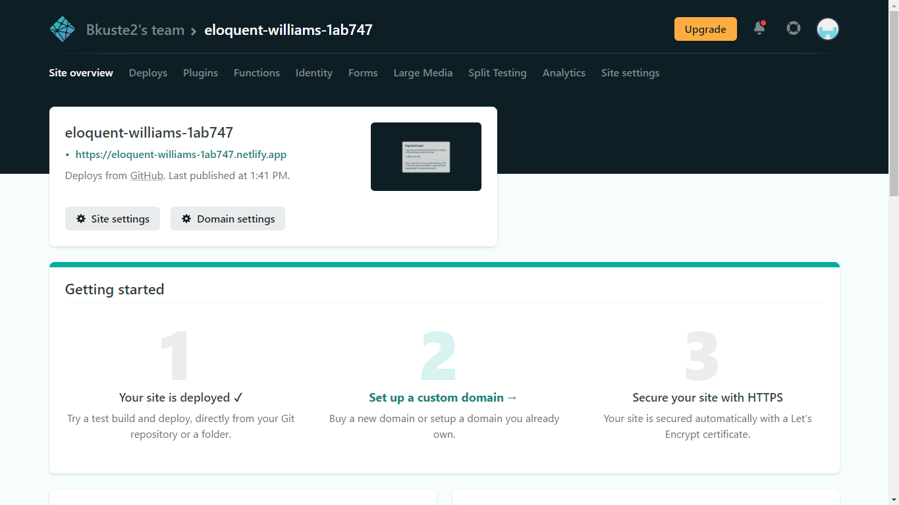
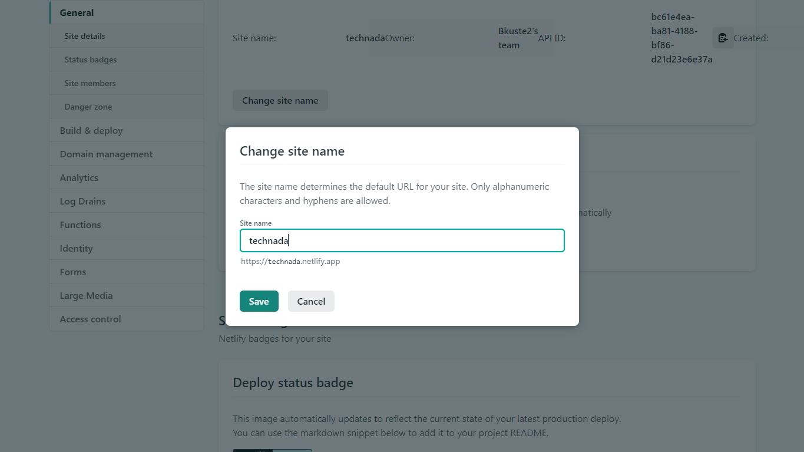

Fluxograma explicando o passo a passo
Como upar arquivos para o GitHub?
Primeiro passo - Você deve ter uma conta no GitHub.

Segundo passo - Na página inicial, próximo a margem esquerda da página você deve clicar no botão "New", localizado acima de "Find a repository..."
Terceiro passo - Após clicar no botão "New", você entrará na página mostrada abaixo, ali você deve botar o nome que você deseja no seu repositório, uma descrição (caso queira), decidir se quer deixar seu repositório público ou privado e mais algumas opções que o git te dá direito caso você queira, e então é só clicar no botão verde "Create Repository"
Quarto passo - Com o repositório criado, e ter o git instalado, você deve entrar na pasta do seu projeto e abrir o terminal, com o terminal aberto você deve usar o comando git init, (ele pode ser usado para converter um projeto existente e não versionado em um repositório do git ou inicializar um novo repositório vazio.), seguido pelo "git add .", que serve para adicionar todos arquivos do seu trabalho, logo após, você deve usar o " git commit -m "Nome.Exemplo" ", para comitar seu trabalho, depois use o comando git branch -M main, para trocar a branch de "master" para "main", após mudar a branch use o comando "git remote add origin https://github.com/Bkuste2/Exemplo-.git", o link mostrado a pouco é apenas um exemplo, e se aplica somente neste teste, o comando deve ser usado: "git remote add origin (link do seu repositório)", para linkar o seu repositório ao GitHub, por fim basta usar o comando "git push -u origin main", para botar tudo que você adicionou anteriormente no repositório.
Quinto passo - Após todos esses passos, basta dar F5 na página do repositório, e lá está seu trabalho upado!
Como upar seu site para o Netlify, após upar para o GitHub?
Primeiro passo - Primeiro passo, crie e/ou logue na sua conta "Netlify"
Segundo passo - Após logar na sua conta "Netlify", clique no botão "New site from git", após clicar neste botão, selecione a opção GitHub.
Terceiro passo - Após ter selecionar o GitHub, você deve logar no mesmo pelo Netlify e assim concedendo acesso ao seu GitHub, após fazer isto, o netlify te mostrará o próximo passo, que é apenas dar deploy no seu site.
Quarto passo - Com isso você terá seu site já upado, agora basta na guia que já estará selecionada automaticamente (Site overview), clique em "Site settings" e scrolle seu mouse um pouco para baixo, até encontrar um botãozinho chamado "Chance site name", então ele abrira uma janelinha, onde você pode escolher o nome do seu site.
